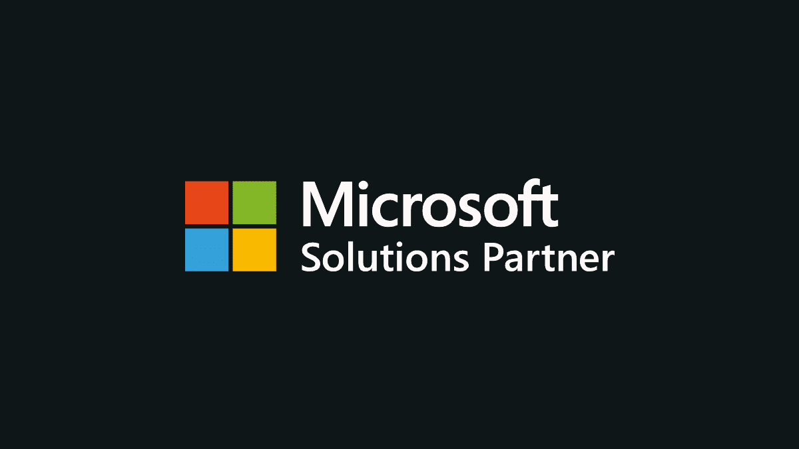
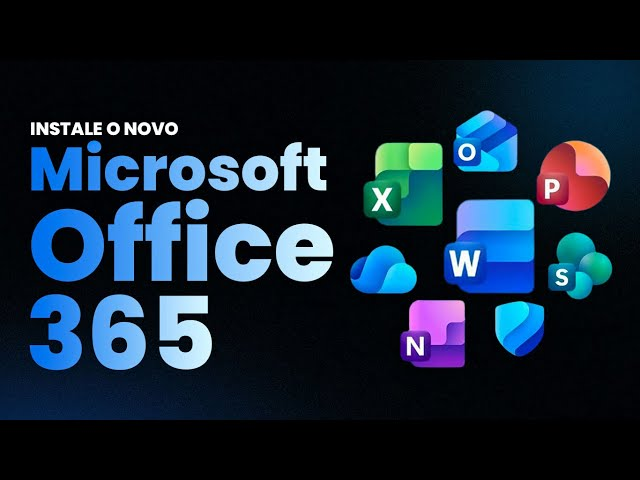
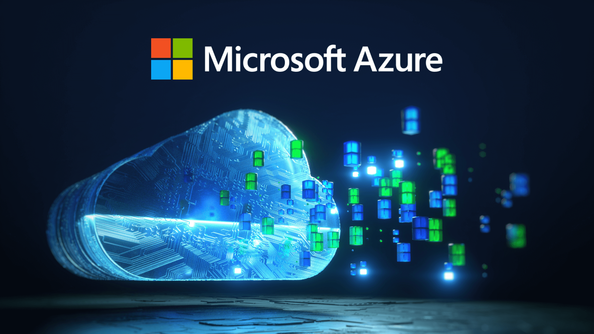
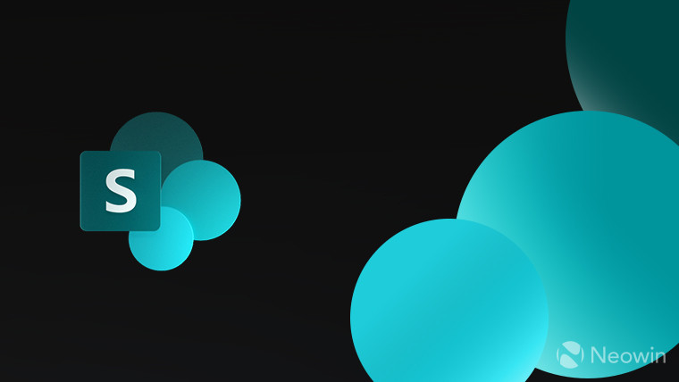
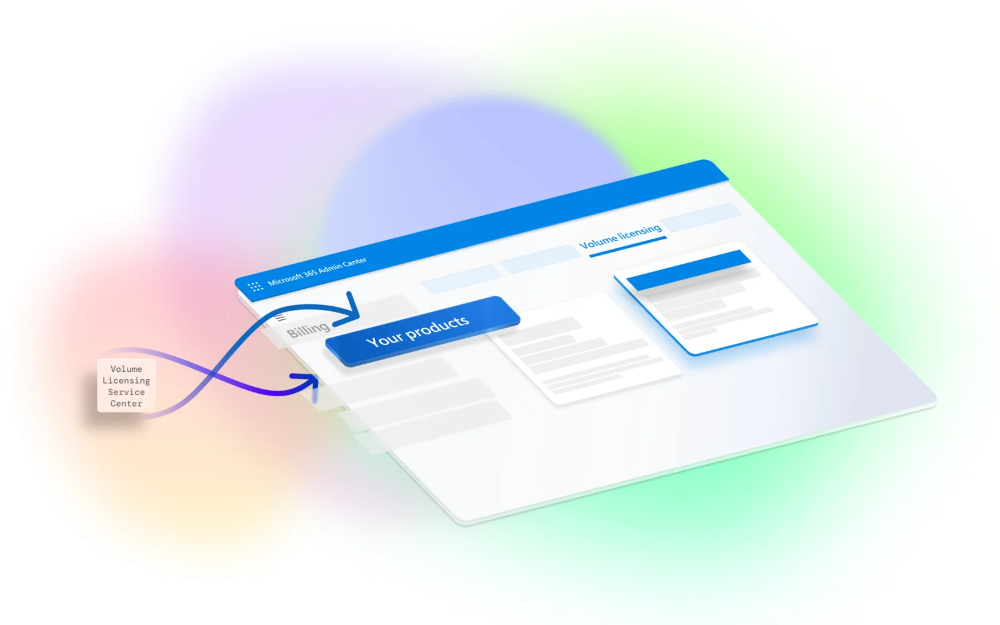
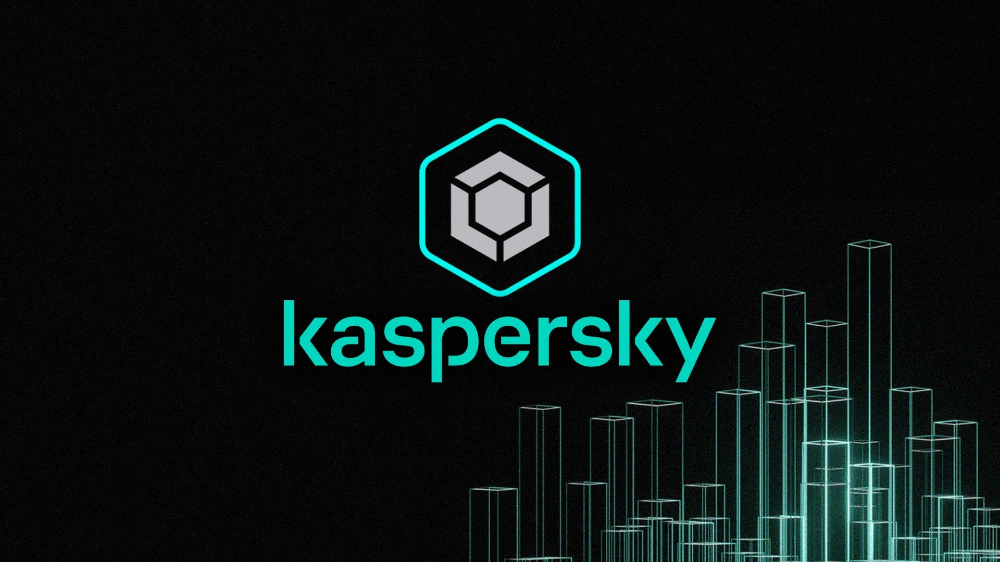

Our Trusted Partners

Microsoft
OrbitOps: Your Trusted Microsoft Partner for Microsoft products As businesses in Uganda increasingly rely on cutting-edge technology for growth, selecting a trusted partner to deliver and manage those solutions is paramount. OrbitOps is a proud, certified official Microsoft Partner, a status that affirms our deep technical expertise and dedication to providing world-class Microsoft products and services to Ugandan enterprises.
We go beyond simply offering software. We commit to understanding your unique business challenges to provide tailored Microsoft solutions—from streamlining operations and boosting productivity to successfully driving your entire digital transformation journey. As an official partner, we have exclusive access to the latest Microsoft resources, tools, support, and best practices, ensuring our clients receive the most innovative and compliant solutions available.
Comprehensive Microsoft Solutions. OrbitOps offers a complete suite of Microsoft technologies, enabling businesses of all sizes—from SMEs to large corporations—to operate efficiently and gain a competitive edge.

Microsoft Office 365
Microsoft Azure
Microsoft SharePoint
Microsoft Product LicensingDynamics 365 Business Central: Flexible Licensing Plans
Choose the licensing plan that perfectly aligns with your operational needs and budget. Our per-user/per-month options ensure you only pay for the functionalities required by your team.
| Licence Tier | Price (Per-User/Month) | Core Capabilities Included |
|---|---|---|
| Business Central Essentials | $70 | Comprehensive Financials and Operations: Includes full functionality for Financial Management, Inventory, Order and Purchase Management, and Project Management. |
| Business Central Premium | $100 | All-in-One Enterprise Management: Includes ALL Essentials features PLUS advanced capabilities for Service Order Management and Manufacturing Management. |
| Business Central Team Member | $8 | Light Access and Collaboration: Ideal for users needing limited interaction, such as approving workflows, updating existing data, creating personal information, and editing job time sheets. Includes Power Apps integration. |
Dynamics 365 Business Central: Comprehensive Business Modules
Business Central modules provide the functionality needed to manage and scale any business effectively.
- Financial Management: Streamline and gain deep insights into your accounting processes, including general ledger, A/P, A/R, cash flow, and reporting. Use real-time data and predictive analytics to stay ahead.
- Sales and Order Management: Manage your entire "lead to cash" sales cycle efficiently. The system centralizes order handling, helps prioritize leads, and optimizes your pricing strategies.
- Inventory and Warehouse Management: Achieve full visibility and control over stock levels. Reduce waste and prevent costly stockouts using real-time tracking and predictive restocking features.
- Inventory and Warehouse Management: Achieve full visibility and control over stock levels. Reduce waste and prevent costly stockouts using real-time tracking and predictive restocking features.
- Project Management: Plan, track, and report on all projects within a unified environment, ensuring timely delivery and strict adherence to budgets.
- Manufacturing Management: Optimize your production lifecycle with advanced planning, scheduling, and execution tools designed to boost efficiency and maintain product quality while cutting costs.
- Customer Relationship Management (CRM): Deliver exceptional customer service by centralizing all customer data. Automate service processes to track interactions, resolve issues quickly, and build lasting satisfaction.
OrbitOps Dynamics 356 ERP Implementation methodology
OrbitOps (U) Limited has developed a powerful and proven implementation methodology, refined over years of extensive project work and industry experience. We leverage best practices and specialized tools to ensure your technology strategy is implemented effectively.
Our process is structured into three collaborative phases:
- Envision & Design.
We work directly with your team to establish a clear foundation for your ERP solution. This phase involves defining business requirements, detailing operational processes and scenarios, and developing a comprehensive conceptual design for your Dynamics 365 ERP. - Build & Test.
Our expert software engineers construct your tailored Dynamics 365 ERP system. This includes carefully executing all necessary configurations, customizations, and data integrations to align precisely with your unique operational needs. We then collaborate with your team for comprehensive joint testing. Together, we validate end-to-end business processes, perform system performance evaluations, load testing, and validate data migration to guarantee seamless functionality and reliability. - Deploy & User Adoption.
Following successful testing, we ensure a smooth transition to the live ERP environment. Our deployment strategy includes detailed planning, coordination, and dedicated support resources for a flawless go-live. Crucially, we provide extensive user training and ongoing post-implementation support, ensuring your team is fully empowered to leverage the full capabilities of your new Dynamics 365 ERP solution.
Other Partners

KasperskyWhy OrbitOps is the Right Choice
OrbitOps is committed to being a long-term partner dedicated to your success, offering:
- Certified Expertise: Official Microsoft Partner status with proven technical proficiency and in-depth local market understanding.
- Customization: Solutions are always tailored to align perfectly with your unique operational workflows and strategic vision.
- End-to-End Support: Comprehensive service from initial consultation and data migration to ongoing support and maintenance.
- Proven Results: A strong track record of successful Microsoft implementations across diverse industries in Uganda.